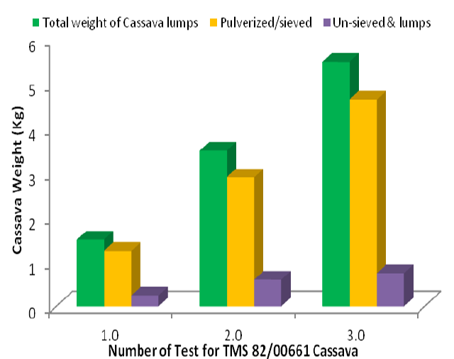

Gráficos mostrando a performace do TMS

O funcionamento do Software (TMS)
Desenvolvido para empresas que trabalham com a distribuição de produtos e materiais e precisam de uma solução que ajude a gerenciar, com maior eficácia, o processo de entregas por meio da contratação de transportadoras.
Este é um software bem completo no que diz respeito às rotinas relacionadas ao transporte, fornecendo total controle e automação de atividades como agendamento das entregas, emissão e conferência de documentos,pode ser adotado tanto por empresas que possuem frota própria quanto pelas que contratam terceiros para o serviço, além de operadores logísticos vai depender da necessidade de cada empresa .